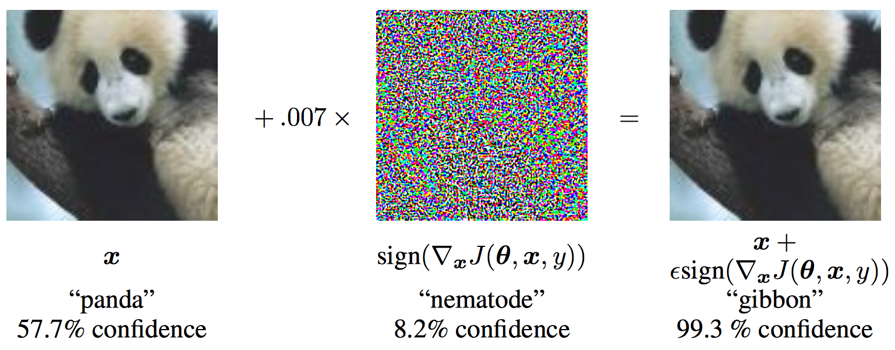
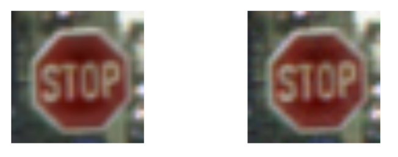
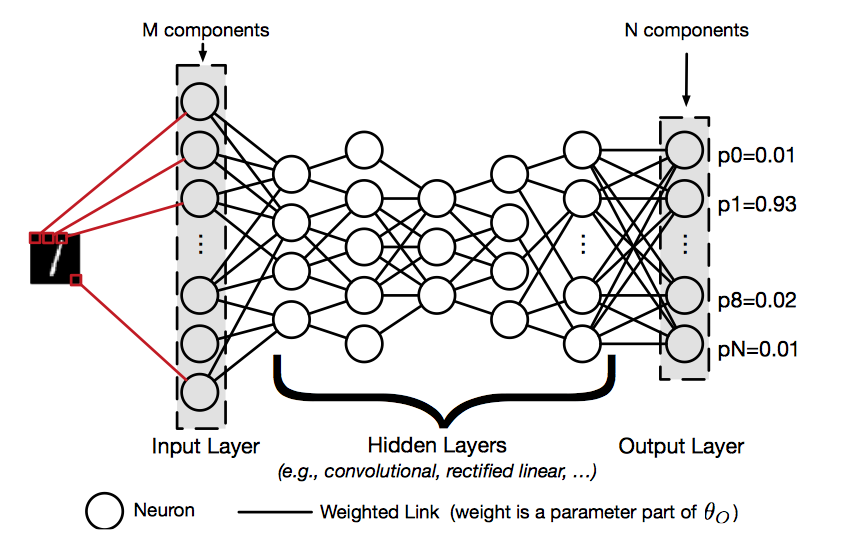
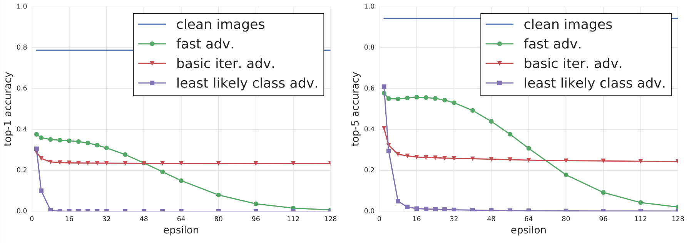
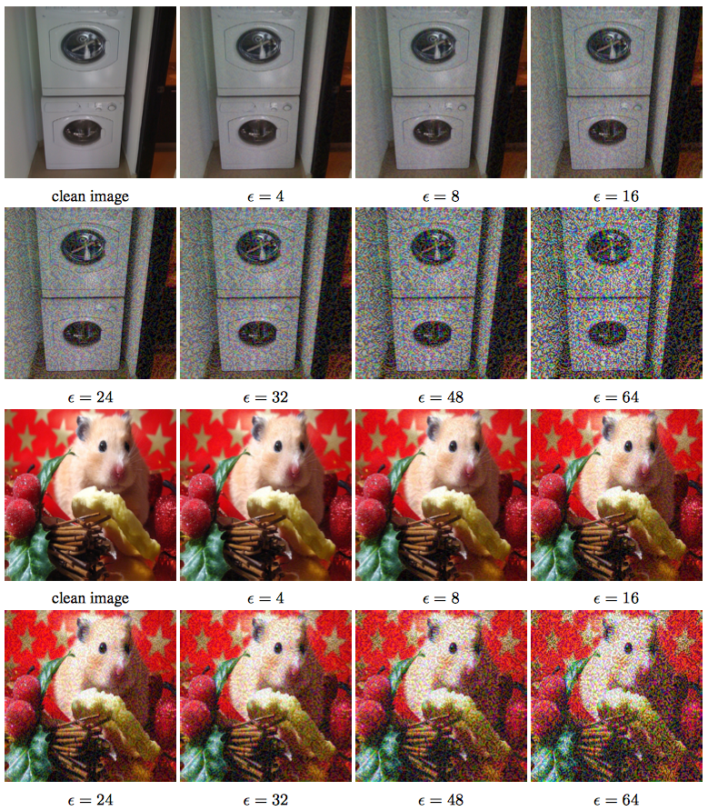

Adversarial Examples in Deep Neural Networks
Posted by Xuchao Zhang, Virginia Tech
Recently, advances in deep neural networks enabled researchers to solve multiple important problems, such as image classification, speech recognition. However, in 2014, Szegedy et al. discovered an intriguing fact that several machine learning models including state-of-the-art neural networks, are vulnerable to adversarial examples. These machine learning models misclassify examples that are only slightly different from correctly classified examples drawn from the data distribution. An adversarial example is a sample of input data which has been modified very slightly in a way that is intended to cause a machine learning classifier to misclassify it. In many cases, these modifications can be so subtle that a human observer does not even notice the modification at all, yet the classifier still makes a mistake. For example, the following figure shows an adversarial example applied to GoogLeNet on ImageNet. By adding an imperceptibly small vector to the input image, the adversarial image makes GoogLeNet classify the image as gibbon rather than panda with 99.3% confidence.

Another example is the traffic sign which is potentially consumed by an autonomous vehicle. To humans, these images appear to be the same: our biological classifiers (vision) identify each image as a stop sign. The image on the left is indeed an ordinary image of a stop sign. The image on the right is generated by adding a precise perturbation that forces a particular DNN to classify it as a yield sign. Here, an adversary could potentially use the altered image to cause a car without failsafes to behave dangerously. This attack would require modifying the image used internally by the car through transformations of the physical traffic sign.

In this article, I will introduce three simple but popular methods to generate adversarial examples. Before we start describing the methods, I will provide preliminaries of the Deep Neural Network Classifier to enalbe understanding of the threat model and attack, after that the notations used in future will be described. Deep neural network (DNN), as illustrated in the following figure, is a machine learning technique that uses a hierarchical composition of n parametric functions to model an input $\textbf{x}$.

Each function $f_i$ for $i \in 1..n$ is modeled using a layer of neurons, which are elementary computing units applying an activation function to the previous layer’s weighted representation of the input to generate a new representation. Each layer is parameterized by a weight vector $θ_i$ impacting each neuron’s activation. Such weights hold the knowledge of a DNN model $F$ and are evaluated during its training phase, as detailed below. Thus, a DNN defines and computes:
$$F(\textbf{x}) = f_n(\theta_n, f_{n-1}(\theta_{n-1}, \dots f_2(\theta_2, f_1(\theta_1, \textbf{x})))$$
The training phase of a DNN $F$ learns values for its parameters $θ_F = {θ_1, \dots, θ_n}$. We focus on classification tasks, where the goal is to assign inputs a label among a predefined set of labels. The DNN is given a large set of known input-output pairs (\textbf{x}, \textbf{y}) and it adjusts weight parameters to reduce a cost quantifying the prediction error between the prediction $F(\textbf{x})$ and the correct output $\textbf{y}$. The adjustment is typically performed using techniques derived from the back-propagation algorithm. Briefly, such techniques successively propagate error gradients with respect to network parameters from the network’s output layer to its input layer.
During the test phase, the DNN is deployed with a fixed set of parameters $θ_F$ to make predictions on inputs unseen during training. We consider classifiers: the DNN produces a probability vector $F(\textbf{x})$ encoding its belief of input $\textbf{x}$ being in each of the classes. The weight parameters $θ_F$ hold the model knowledge acquired by training. Ideally, the model should generalize and make accurate predictions for inputs outside of the domain explored during training. However, attacks manipulating DNN inputs with adversarial examples showed this is not the case in practice.
Next, I will introduce the methods to generate "adversarial images". The following notations will be used. In the remaining of the paper we use the following notation. $\textbf{X}$ represents an image, which is typically 3-D tensor (width × height × depth). In this blog, we assume that the values of the pixels are integer numbers in the range [0, 255]. $y_{true}$ denotes the true class for the image $\textbf{X}$. $J(\textbf{X}, y)$ represents cross-entropy cost function of the neural network, given image $\textbf{X}$ and class $y$. The network weights (and other parameters) $\theta$ in the cost function are intentionally omitted because we assume they are fixed (to the value resulting from training the machine learning model) in the context of the blog. For neural networks with a softmax output layer, the cross-entropy cost function applied to integer class labels equals the negative log-probability of the true class given the image: $J(\textbf{X}, y) = − log p(y|\textbf{X})$.
One of the simplest methods to generate adversarial images, described in (Goodfellow et al., 2014), is motivated by linearizing the cost function and solving for the perturbation that maximizes the cost subject to an $L_\infty$ constraint. This may be accomplished in closed form, for the cost of one call to back-propagation:
$$ \textbf{X}^{adv} = \textbf{X} + \epsilon sign(\triangledown_X J(\textbf{X}, y_{true})) $$
where $\epsilon$ is a hyper-parameter to be chosen. This method is referred as "fast" because it does not require an iterative procedure to compute adversarial examples, and thus is much faster than other considered methods.
Basic Iterative Method is another straightforward way to extend the “fast” method by applying it multiple times with small step size, and clip pixel values of intermediate results after each step to ensure that they are in an $\epsilon$-neighbourhood of the original image:
$$ \textbf{X}_0^{adv} = \textbf{X}, \ \ \ \textbf{X}_{N+1}^{adv} = Clip_{X,\epsilon} \{ \textbf{X}_N^{adv} + \alpha sign(\triangledown_X J(\textbf{X}_N^{adv}, y_{true})) \} $$
In practice, $\alpha$ is set to 1, i.e. the value of each pixel is only changed by 1 on each step. The number of iterations is set to be min($\epsilon$ + 4, 1.25$\epsilon$). This amount of iterations was chosen heuristically; it is sufficient for the adversarial example to reach the edge of the $\epsilon$ max-norm ball but restricted enough to keep the computational cost of experiments manageable.
Both methods we have described so far simply try to increase the cost of the correct class, without specifying which of the incorrect classes the model should select. Such methods are sufficient for application to datasets such as MNIST and CIFAR-10, where the number of classes is small and all classes are highly distinct from each other. On ImageNet, with a much larger number of classes and the varying degrees of significance in the difference between classes, these methods can result in uninteresting misclassifications, such as mistaking one breed of sled dog for another breed of sled dog. In order to create more interesting mistakes, we introduce the iterative least-likely class method. This iterative method tries to make an adversarial image which will be classified as a specific desired target class. For desired class we chose the least-likely class according to the prediction of the trained network on image $\textbf{X}$:
$$y_{LL} = argmin_y\{p(y|\textbf{X})\}$$
For a well-trained classifier, the least-likely class is usually highly dissimilar from the true class, so this attack method results in more interesting mistakes, such as mistaking a dog for an airplane.
To make an adversarial image which is classified as $y_{LL}$ we maximize $log p(y_{LL}|X)$ by making iterative steps in the direction of $sign\{\triangledown_X log p(y_{LL}|X)\}$ . This last expression equals $sign\{-\triangledown_X log p(y_{LL}|X)\}$ for neural networks with cross-entropy loss. Thus we have the following procedure:
$$ \textbf{X}_0^{adv} = \textbf{X}, \ \ \ \textbf{X}_{N+1}^{adv} = Clip_{X,\epsilon} \{ \textbf{X}_N^{adv} - \alpha sign(\triangledown_X J(\textbf{X}_N^{adv}, y_{LL})) \} $$
For this iterative procedure, the same $\alpha$ and same number of iterations are used as for the basic iterative method. The method is referred as "least likely class".
An experimental comparison of adversarial methods to understand the actual classification accuracy on the generated images as well as the types of perturbations exploited by each of the methods. The experiments were performed on all 50,000 validation samples from the ImageNet dataset using a pre-trained Inception V3 classifier. For each validation image, the adversarial examples are generated by using different methods and different values of $\epsilon$. For each pair of method and $\epsilon$, the classification accuracy are computed on all 50,000 images. Also, the accuracy on all clean images are computed as a baseline.
Top-1 and top-5 classification accuracy on clean and adversarial images for various adversarial methods are summarized in the following figure.

As shown in the figure, the fast method decreases top-1 accuracy by a factor of two and top-5 accuracy by about 40% even with the smallest values of $\epsilon$. As we increase $\epsilon$, accuracy on adversarial images generated by the fast method stays on approximately the same level until $\epsilon$ = 32 and then slowly decreases to almost 0 as $\epsilon$ grows to 128. This could be explained by the fact that the fast method adds $\epsilon$-scaled noise to each image, thus higher values of $\epsilon$ essentially destroys the content of the image and makes it unrecognisable even by humans. The following adversarial image show the case.

On the other hand iterative methods exploit much finer perturbations which do not destroy the image even with higher $\epsilon$ and at the same time confuse the classifier with higher rate. The basic iterative method is able to produce better adversarial images when $\epsilon \le 48$, however as we increase $\epsilon$ it is unable to improve. The “least likely class” method destroys the correct classification of most images even when $\epsilon$ is relatively small.
Following general observations can be drawn from the experiments: 1) Adversarial examples generated by the fast method are the most robust to transformations, and adversarial examples generated by the iterative least-likely class method are the least robust. This coincides with our results on photo transformation. 2) The top-5 destruction rate is typically higher than top-1 destruction rate. This can be explained by the fact that in order to “destroy” top-5 adversarial examples, a transformation has to push the correct class labels into one of the top-5 predictions. However in order to destroy top-1 adversarial examples we have to push the correct label to be top-1 prediction, which is a strictly stronger requirement. 3) Changing brightness and contrast does not affect adversarial examples much. The destruction rate on fast and basic iterative adversarial examples is less than 5%, and for the iterative least-likely class method it is less than 20%. 4) Blur, noise and JPEG encoding have a higher destruction rate than changes of brightness and contrast. In particular, the destruction rate for iterative methods could reach 80% −90%. However none of these transformations destroy 100% of adversarial examples, which coincides with the “photo transformation” experiment.
CS/ECE 5584: Network Security, Fall 2017, Ning Zhang